Plant A Tree : Not A Man
It is said that he who plants a tree, plants a hope. The hope is that someday the plant will grow to be a big…
5 min readBy Pradeep Biswal
It is said that he who plants a tree, plants a hope. The hope is that someday the plant will grow to be a big…
5 min read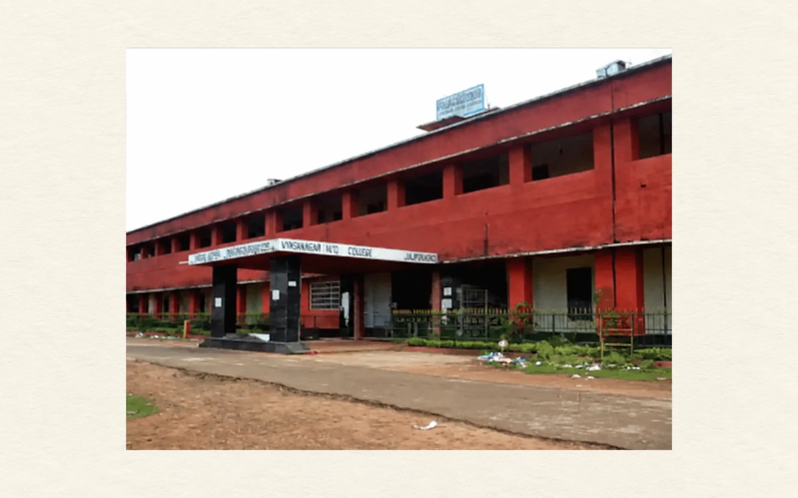
Life has few memories which never fade with the tides of time. In 1975, I finally opted to join the local college Vyasanagar College for…
6 min readMy father had got an English Raleigh cycle in his younger days which was a proud possession for him. In those days our entire village…
3 min read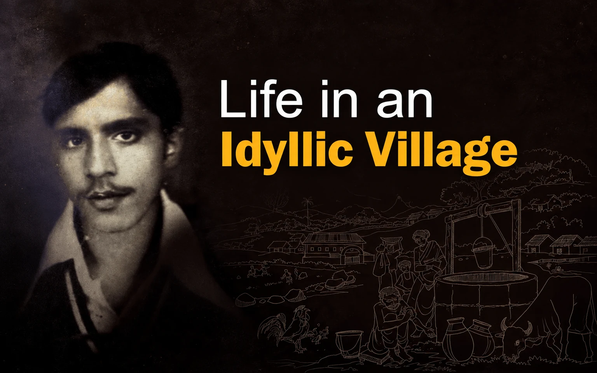
It was the evening of 6th May, 1960. I came to this world as the first child of my parents. The village midwife performed the…
7 min read
During British rule, Sukinda was a princely state adjacent to Keonjhar state on one side, Dhenkanal and Balarampur state on the other. The Singhdeo royal…
4 min read
Tarun Kanti Mishra is a front-ranking fiction writer in contemporary Odia literature. Born in the year 1950 in a village in Anandpur sub-division in Keonjhar…
5 min read
Jagannath Prasad Das, more famous as JP or JP Das, is a very familiar name in not only Odia Literature but also in pan-Indian literature…
4 min readDuring my growing up years, Sitakant Mohapatra was already an icon in Odia poetry. Although he happened to be a bilingual writer he chose to…
4 min read
In the early eighties, I came in contact with Dasarathi Patnaik fondly called Dasia Aja in a literary event. In those days he was a…
5 min read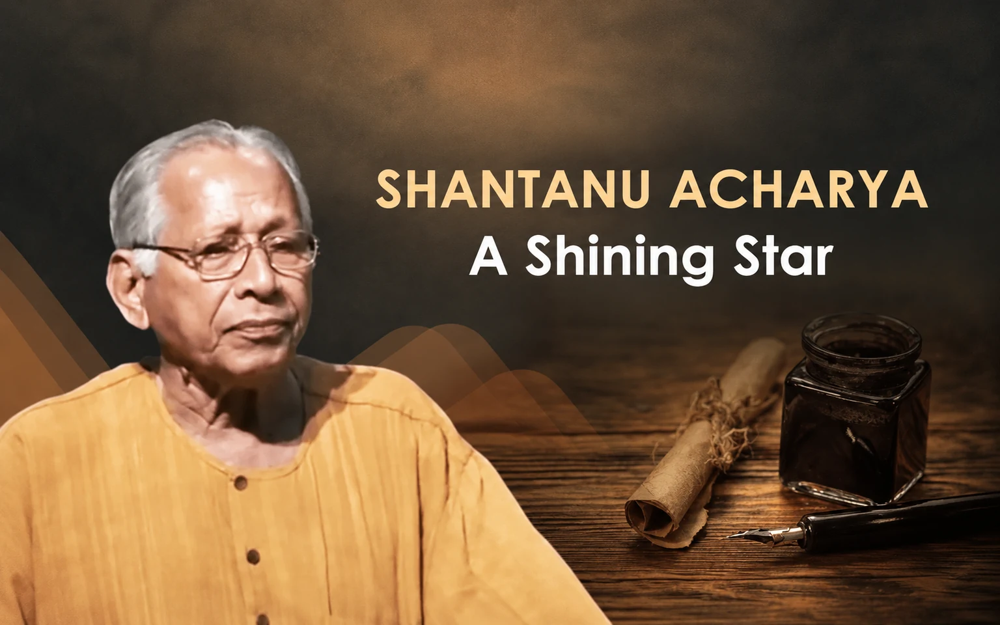
In the year 1979, I got admitted to Vanivihar for my post-graduation studies. It was one of my first priorities to meet Shri Santanu Acharya,…
5 min read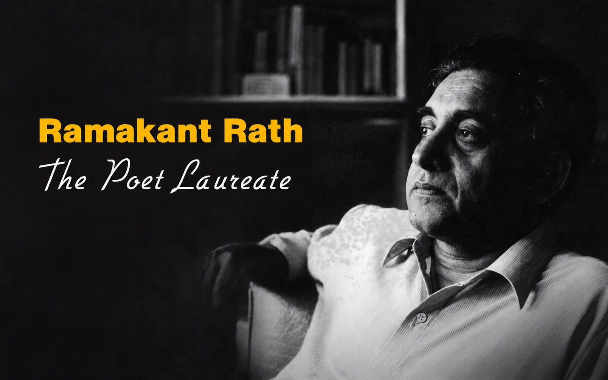
Ramakant Rath is a name to be reckoned with in the field of contemporary Indian Poetry. He is a legend in his lifetime. A poet…
5 min read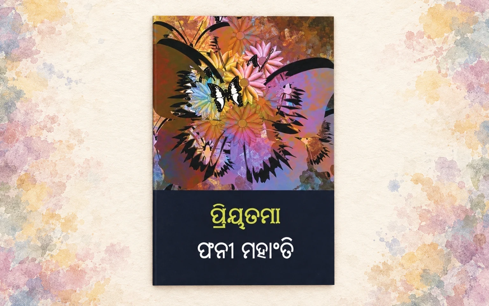
His poems always speak of love and loss in life. He has written thousands of love poems but when quipped about the inspiration behind such…
3 min read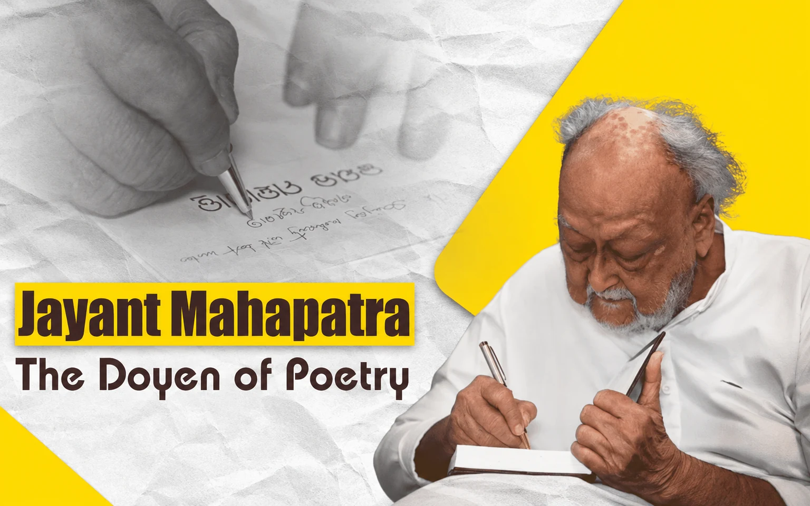
I first heard of Jayant Mahapatra when he bagged the Central Sahitya Akademi award for his poetry collection ‘Relationship’ in 1981. Everyone was taken by…
5 min read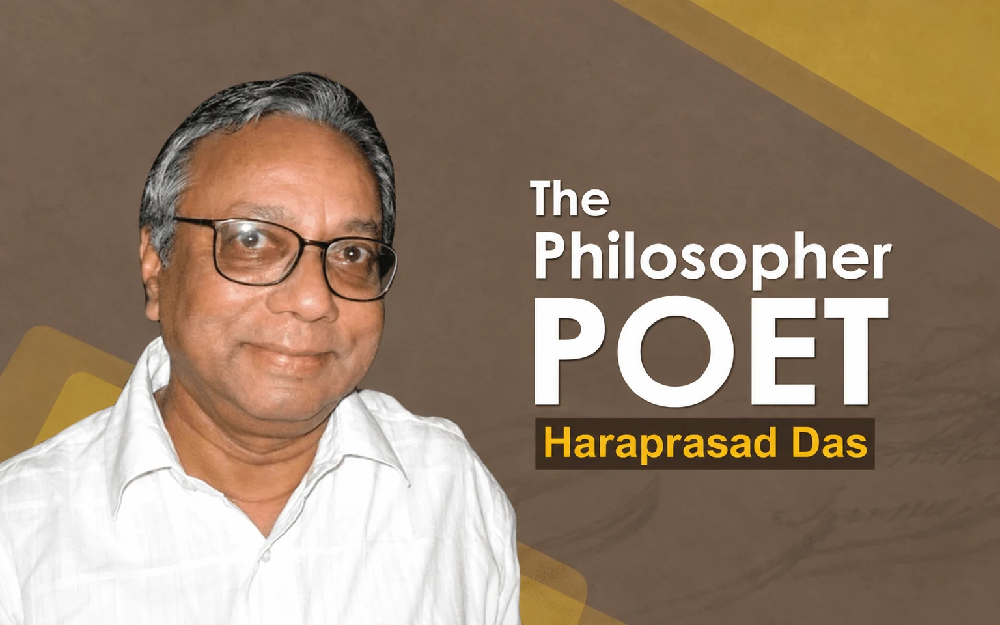
Hara Prasad Das is a name to be reckoned with in contemporary Odia literature. He excels as a poet, an essayist, a columnist and a…
3 min read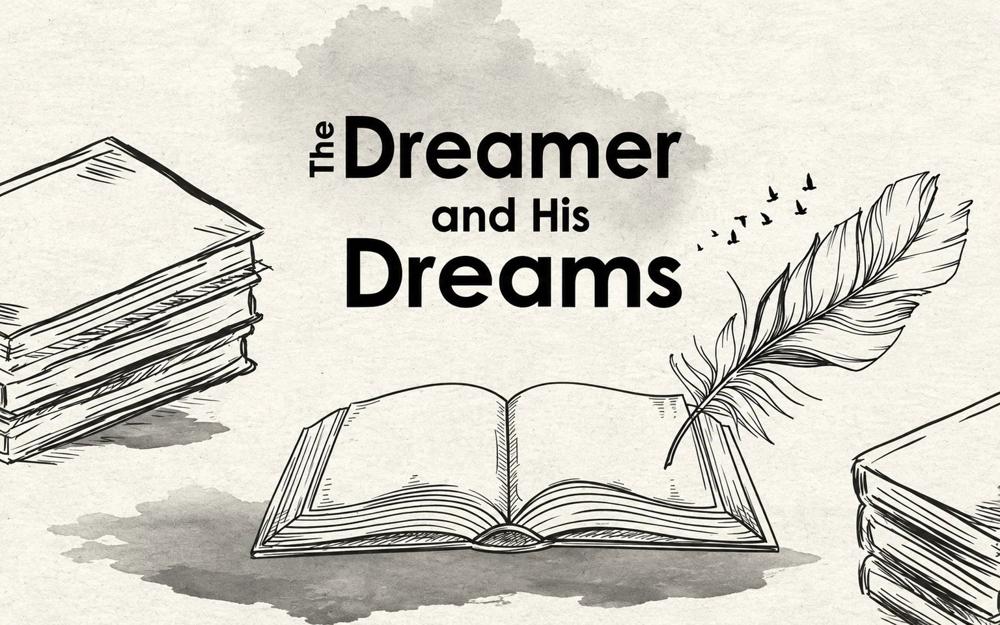
The daily newspaper Dharitri brings out an annual issue in the month of November each year containing writings of eminent authors on the occasion of…
7 min read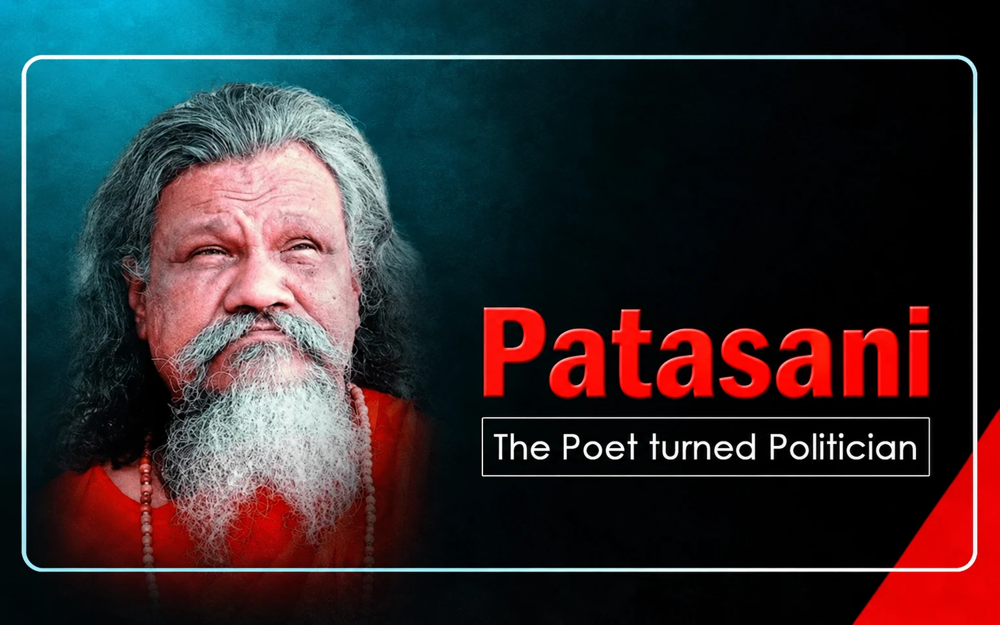
In mid seventies a literary function was organised on the outskirts of Jajpur Road under the auspices of ‘Chalapath’, a local literary organisation floated by…
7 min read
Ashok Meena is an IAS officer of 1993 batch who hails from Rajasthan and graduated from IIT Kanpur in Computer Science in 1992. In the…
6 min read
Tuhin Kanta Pandey who is presently Secretary, Department of Investment and Public Asset Management under Ministry of Finance in Government of India is considered to…
4 min read
Towards the end of the last century, Odisha was almost in red. Most of the states had the same fate. The revenue expenditures exceeded the…
4 min read
An IAS officer of 1984 batch Dr R. Balakrishnan is a great visionary. Hailing from Madurai in Tamil Nadu he was a post graduate in…
4 min read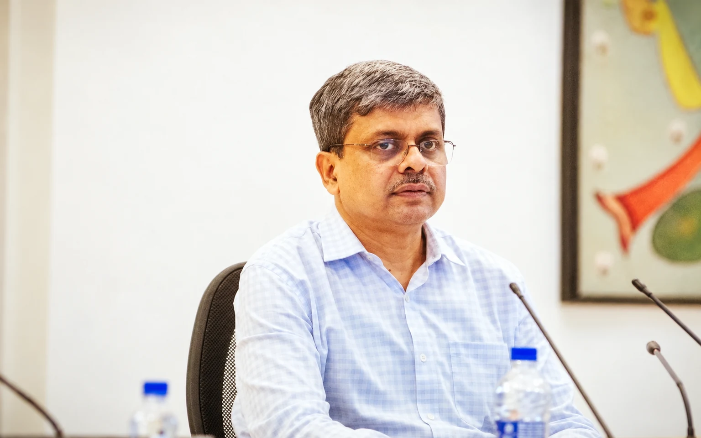
Shri A. P. Padhi , a 1383 batch IAS officer of Odisha cadre, was the longest serving Chief Secretary of the State. He had also…
4 min readSales Tax was one of the important sources of revenue for the states since independence and with the passage of time it proved to be…
5 min read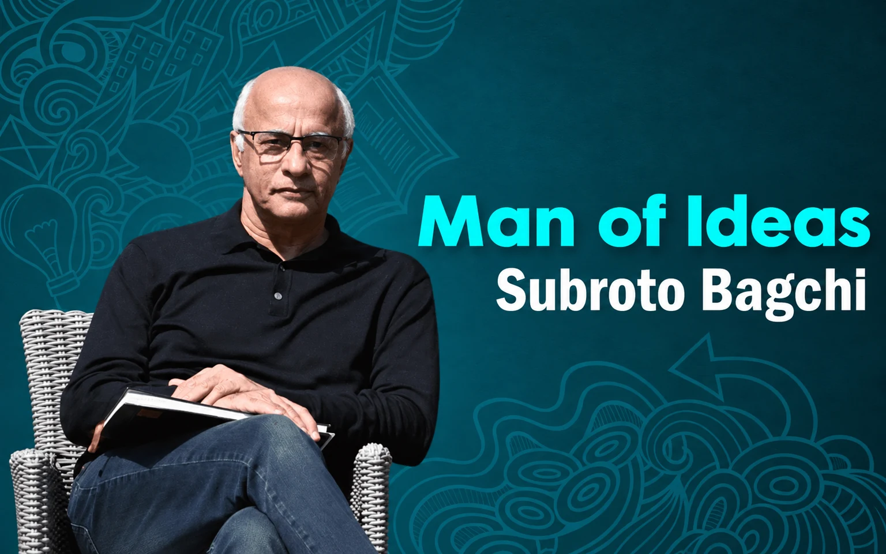
It was the afternoon of 2nd April, 2016. The first edition of Odisha Knowledge Hub Lecture Series was organized in the spacious RD Department Conference…
5 min read
I have seen during my life how the bureaucracy has degenerated into a self- serving group over the years and the way it behaves as…
4 min read
In September, 1998 I joined as the Circle head (then CTO now DCCT/ JCCT )of Puri Circle on promotion. In the first week of October…
5 min read
It is my privilege to receive some commendations and outstanding CCRs consecutively for years together during my service career. Of course, at the initial years,…
5 min read
A public servant is expected to be fair, honest, and efficient. Jugal Kishore Mohapatra was truly a befitting person who had all these qualities as…
5 min read
Dr. Taradatt is a much discussed name in Odisha Administration. He was famous as Terror Datt among his subordinates. He has himself mentioned about it…
6 min readOne day in October, 2013 Principal Secretary Finance, Jugal Kishore Mohapatra called me to his chamber and expressed his concern to find a suitable officer…
8 min read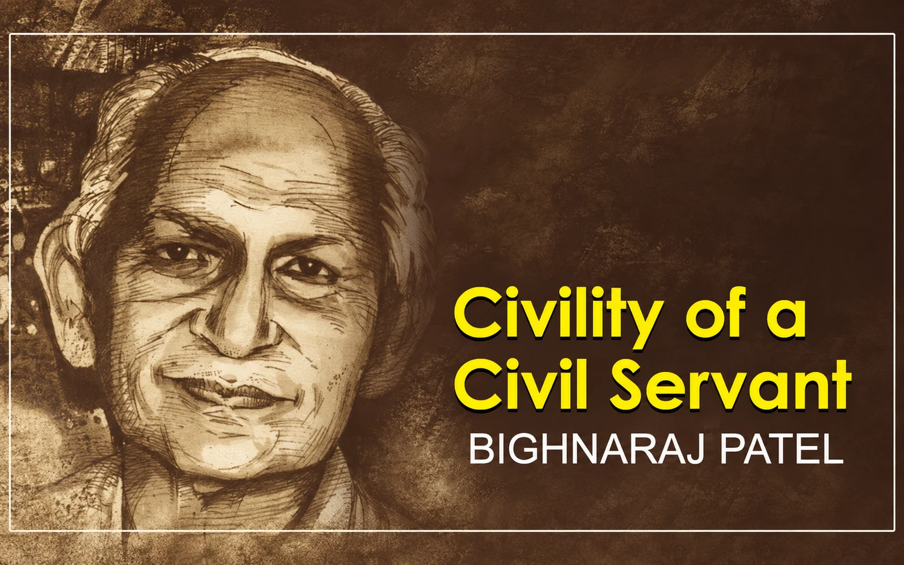
I am fortunate to have enjoyed the company of some of the bright civil servants of our state starting from my student days till date.…
5 min read
In the eighties, All India Radio was the most popular source of entertainment, education, and information in Odisha. Doordarshan was then in a nascent stage…
4 min readEver since my childhood I got addicted to newspapers. In those days in the sixties and seventies newspapers used to arrive by post and reach…
5 min readI am reminded of this iconic advertisement of Onida TV in Doordarshan years ago, which was a hot topic then and also brought instant success…
3 min readMy bonhomie with the media is very old. But in spite of having a good relationship with the press, I always remained at the receiving…
4 min read
During my early childhood in sixties one evening my father came with a Bush radio from Cuttack and it became an instant sensation in our…
5 min read
Within ten seconds twin towers Apex and Ceyane built by the realtor major Supertech in its Emerald Court compound in sector 93A of Noida built…
4 min readSri Lanka is an island country close to India and has a lot in common from socio-cultural perspective. Now it’s in news for the acute…
5 min read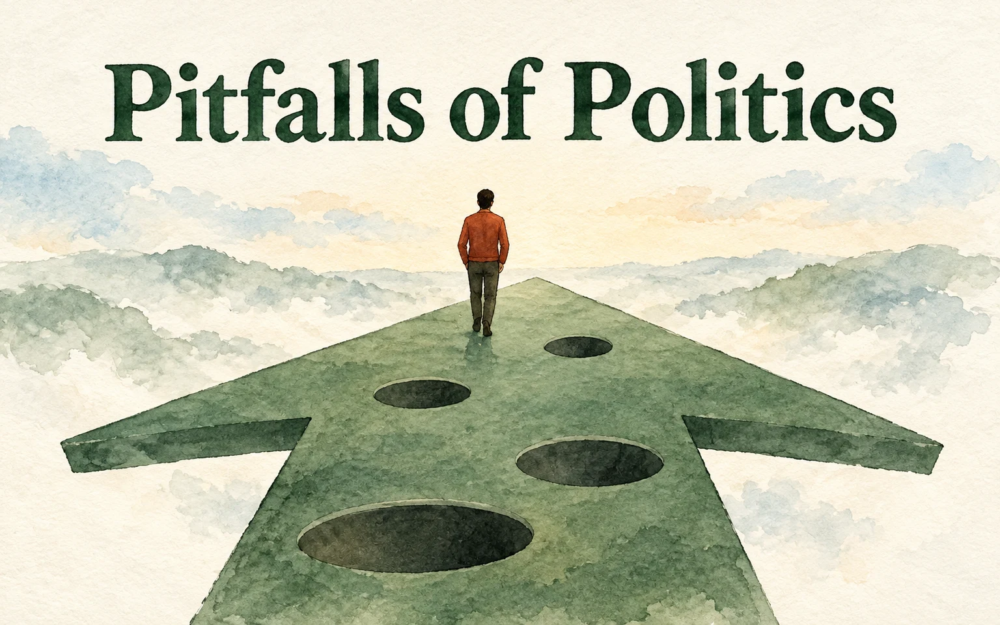
‘Politics is the last resort of the scoundrels‘, said George Bernard Shaw. However, my father Shri Rankanath Biswal chose to be a politician in his…
6 min readThe enactment of the Real Estate (Regulation and Development) Act, 2016 was a historic step by the Union Government to regulate the real estate sector…
5 min read
Elections in India were almost festivals of democracy. Posters, banners, placards, rallies and processions used to make it hugely expensive and provide an opportunity for…
7 min read
In 1991 I was in Delhi when the general election had been declared and the political atmosphere was charged. I called on Rabi Ray, then…
6 min read